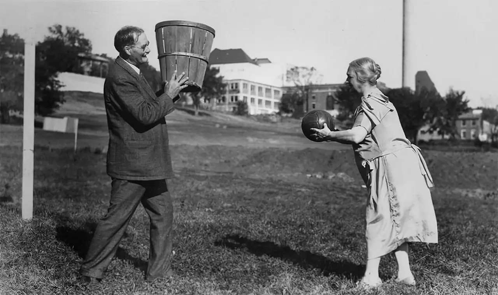
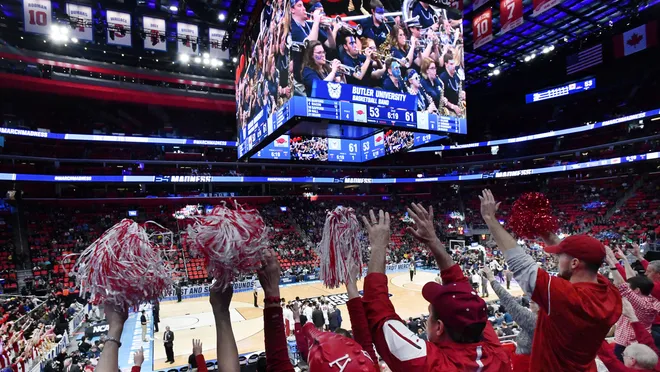
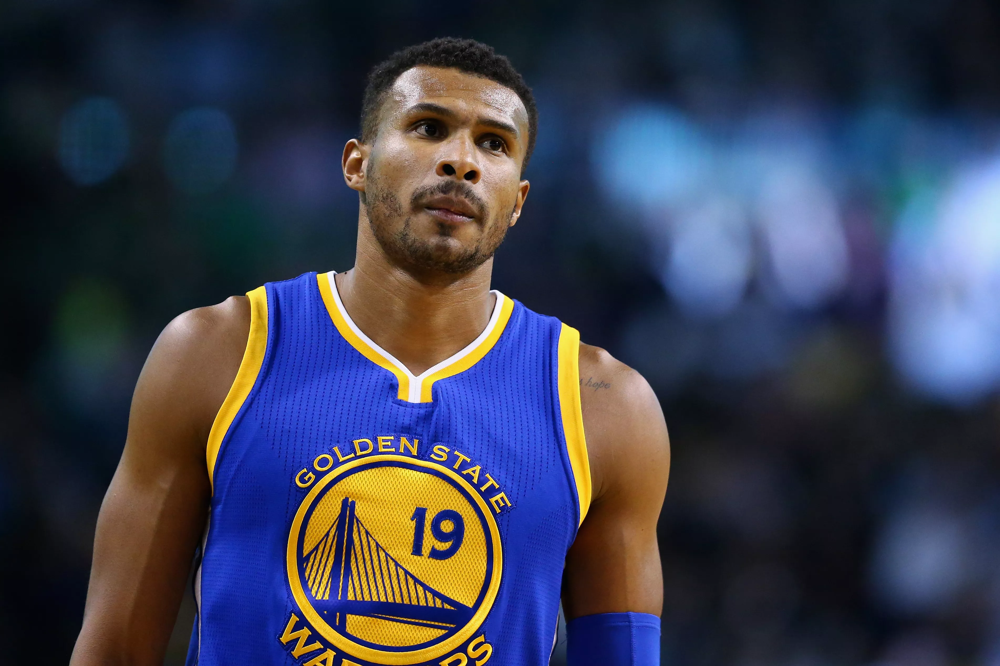
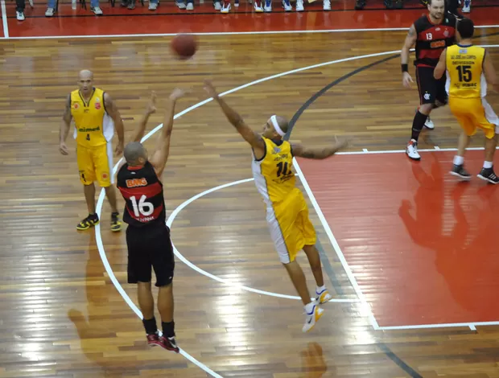
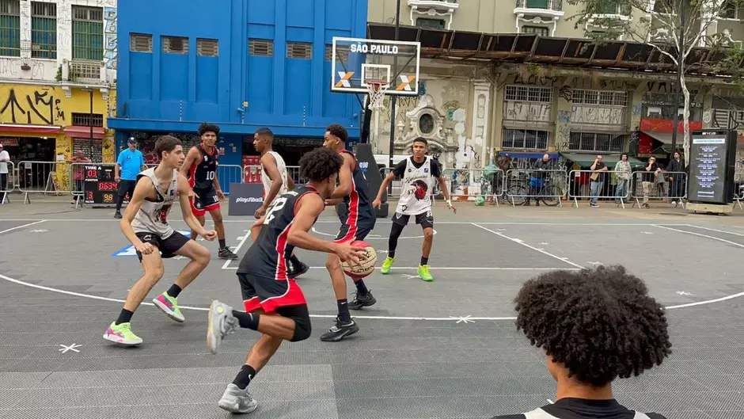

Basquete: o esporte que nasceu numa escola e virou indústria cultural
Criado para ocupar alunos no inverno americano, o basquete se tornou um dos maiores fenômenos esportivos e culturais do mundo
Pedro Kaup—
São Paulo
A Origem: uma bola, um cesto de pêssegos e 30 dias
O basquete é um dos poucos esportes do mundo que tem data, local e autor bem definidos. Em dezembro de 1891, o professor de educação física James Naismith, em Springfield, Massachusetts (EUA), recebeu uma missão simples e difícil: criar uma atividade indoor que mantivesse os alunos ocupados durante o inverno rigoroso, sem o contato físico violento do futebol americano.

O primeiro cesto de basquete, em Springfield, Massachusetts.
Ele pendurou dois cestos de pêssego no alto da quadra e escreveu 13 regras básicas. A ideia era que o jogo dependesse de precisão e passes, não de força. O primeiro jogo terminou 1 a 0 — e a bola só entrava porque alguém subia numa escada para tirá-la do cesto. Anos depois, alguém cortou o fundo do cesto. O resto é história.
Naismith era canadense e, ironicamente, nunca foi um grande jogador. Ele criou o esporte, mas foi seu aluno Phog Allen quem popularizou a modalidade nas universidades americanas.
Das quadras de Springfield à NBA: como o basquete virou indústria
O esporte se espalhou rápido pelas universidades americanas, mas demorou quase meio século para virar uma liga profissional organizada. A NBA (National Basketball Association) nasceu em 1946, em Nova York, como Basketball Association of America (BAA), criada por donos de arenas que queriam lucrar com as noites livres do calendário esportivo. Em 1949, após absorver a rival NBL, ela adotou o nome que carrega até hoje.
Partida da NBA em Nova York, nos primeiros anos da liga.
Os primeiros anos foram de sobrevivência: ginásios pequenos, viagens de ônibus, salários modestos e uma liga que ainda disputava espaço com o beisebol e o futebol americano. A virada veio em camadas. Nos anos 1950, a NBA se integrou racialmente antes de boa parte da sociedade americana, com Bill Russell e Wilt Chamberlain redefinindo o que um pivô podia fazer. Nos anos 1980, a rivalidade entre Magic Johnson e Larry Bird salvou a liga da irrelevância e a levou à televisão aberta. Nos anos 1990, Michael Jordan e o Dream Team de 1992 transformaram a NBA em fenômeno global.
Hoje a NBA é uma indústria de entretenimento: 30 franquias, receitas anuais na casa dos bilhões de dólares, transmissão em mais de 200 países e um ecossistema que envolve arenas, mídia, apostas esportivas, moda e turismo. O Draft, a Summer League e o All-Star Weekend viraram eventos de calendário mundial.
O NBB e a reconstrução do basquete brasileiro
O Brasil foi um dos primeiros países do mundo a praticar basquete — chegou em 1896, apenas cinco anos após a criação, trazido pelo professor Augusto Shaw ao Mackenzie College, em São Paulo. O país construiu uma tradição vitoriosa: dois títulos mundiais masculinos (1959 e 1963), campeonato mundial feminino em 1994, prata olímpica em Atlanta 1996 e bronze em Sydney 2000, com a geração dourada de Oscar Schmidt, Hortência, Paula e Magic Paula.
Partida do NBB, a liga que reorganizou o basquete nacional.
Mas o esporte viveu um longo período de apagão a partir dos anos 2000. A liga nacional era desorganizada, os clubes quebravam, a seleção perdia relevância e o basquete desaparecia da grade da TV aberta. Foi nesse cenário que, em 2008, os próprios clubes criaram o NBB (Novo Basquete Brasil), uma liga gerida pela Liga Nacional de Basquete em parceria com a CBB. O modelo foi inspirado na NBA: calendário estável, franquias com identidade própria, exigências de gestão, arena e transparência financeira.
O NBB não resolveu tudo, mas mudou o patamar. Criou uma competição previsível, atraiu patrocínio, formou público e devolveu ao basquete brasileiro um palco permanente. Clubes como Flamengo, Franca, Minas, São Paulo e Paulistano passaram a disputar títulos com regularidade, e a liga virou vitrine para jovens atletas. Ainda há distância enorme da NBA em receita e visibilidade — mas existe hoje uma estrutura que não existia em 2007.
A importância do basquete nos Estados Unidos
Nenhum outro país transformou um esporte em parte tão profunda da própria identidade cultural quanto os Estados Unidos fizeram com o basquete. O esporte cresceu dentro das escolas e universidades americanas, e o campeonato universitário — o famoso March Madness — é hoje um evento que para o país: escritórios fazem bolões, a audiência supera a de muitos campeonatos profissionais, e uma única cesta no último segundo pode transformar um jogador desconhecido em herói nacional.

March Madness, o campeonato universitário que para os Estados Unidos.
Para muitas comunidades negras e periféricas, a quadra virou via de mobilidade social — uma bolsa universitária podia mudar a trajetória inteira de uma família. E o esporte também virou palco de posicionamento: atletas como LeBron James, Stephen Curry e Jaylen Brown usaram a visibilidade para falar de racismo, educação e desigualdade. A NBA se tornou uma das ligas mais politizadas do mundo, e isso é parte do que a torna relevante.
Os brasileiros na NBA: quatro histórias diferentes
Leandrinho Barbosa foi o primeiro brasileiro a construir uma carreira longa e vitoriosa na NBA sem ser pivô. Escolhido pelo Phoenix Suns em 2003, ele encontrou o sistema perfeito: o "Seven Seconds or Less" de Mike D'Antoni, que exigia velocidade, arremesso e decisão rápida. Virou o sexto homem ideal, foi eleito Melhor Jogador Vindo do Banco em 2007 e conquistou o título com o Golden State Warriors em 2015. Hoje, aposentado das quadras, ele segue ligado ao basquete como embaixador do Warriors e figura presente em eventos da NBA no Brasil — um dos raros brasileiros com anel de campeão e reconhecimento consolidado na liga.

Leandrinho Barbosa, campeão da NBA pelo Golden State Warriors em 2015.
Anderson Varejão representa outra trajetória: a do jogador de energia. Escolhido pelo Orlando Magic em 2004 e imediatamente negociado com o Cleveland Cavaliers, ele passou mais de uma década como titular do garrafão ao lado de LeBron James, ficando conhecido pela defesa agressiva, pelos rebotes e pela disposição de fazer o trabalho sujo. Ficou no Cleveland até 2016 e encerrou a carreira no basquete brasileiro, no Franca. Nenê, por sua vez, foi o pioneiro da geração moderna: draftado em 2002 pelo New York Knicks e negociado com o Denver Nuggets, jogou 17 temporadas na NBA por Denver, Washington e Houston, com médias sólidas e a reputação de jogador técnico e confiável. Gui Santos é o nome mais recente: draftado pelo Golden State Warriors em 2023, ele representa uma geração formada em projetos brasileiros e no basquete universitário americano, com perfil versátil de ala que defende várias posições. Ainda em construção na liga, ele é hoje o principal elo entre o basquete brasileiro atual e a NBA.
Como o Basquete Funciona?
Duas equipes de 5 jogadores em quadra, uma bola laranja e dois aros a 3,05 metros do chão. Parece simples, mas a dinâmica é uma das mais complexas do esporte coletivo. Cada partida tem 4 quartos de 10 minutos (regras FIBA) ou 12 minutos (NBA), com posse de bola de 24 segundos para finalizar. O objetivo é claro: acertar a cesta. Mas o valor dos pontos muda conforme o local do arremesso — 2 pontos dentro do garrafão e da linha de três, 3 pontos atrás da linha, e 1 ponto nos lances livres.

A linha de três pontos, que mudou a lógica do jogo moderno.
As posições tradicionais são: armador (organiza o jogo), ala-armador e ala (pontuadores e defensores), pivô (jogo próximo à cesta). O basquete moderno, porém, apagou quase todas essas fronteiras — hoje todo mundo arremessa de três, todo mundo passa, todo mundo defende em qualquer posição. Uma regra que confunde quem está começando: o jogador com a bola precisa quicar (driblar) enquanto se desloca. Andar sem quicar é "andada", falta. E após parar de driblar, ele tem apenas alguns segundos para passar ou arremessar.
O Basquete no Brasil: crescimento silencioso e valorização recente
Durante os anos 2000 e 2010, o basquete brasileiro viveu um período de menor visibilidade. A NBA era distante, o NBB lutava por espaço na mídia e o esporte ficava atrás do futebol e do vôlei no imaginário popular. Esse cenário mudou por três motivos.

O basquete 3x3 levou a modalidade para praças e parques.
Primeiro, a geração atual de jogadores na NBA recolocou o Brasil no radar internacional — cada brasileiro draftado vira notícia e inspiração. Segundo, a popularização da NBA no streaming: com transmissões acessíveis e conteúdo nas redes sociais, o público jovem brasileiro passou a acompanhar a liga americana com a mesma intensidade com que acompanha futebol europeu. Terceiro, o crescimento do basquete 3x3 e das quadras de rua: a modalidade olímpica, incluída em Tóquio 2020, trouxe o basquete para espaços urbanos, com torneios em praças e parques. É um formato rápido, barato e altamente televisionável — e o Brasil tem se destacado nele.
Talvez o aspecto mais importante da valorização recente seja o papel social. Projetos em comunidades, escolinhas em periferias e iniciativas municipais usam o basquete como ferramenta de inclusão, disciplina e saúde mental. Em um país onde a saúde mental ainda é um tema em construção, o esporte coletivo oferece algo valioso: pertencimento. A quadra ensina a lidar com derrota, a confiar no colega, a controlar a frustração. São habilidades que vão muito além do jogo.
A Importância na Vida dos Atletas
Como todas as modalidades coletivas, o basquete é uma escola de vida disfarçada de esporte. Fisicamente, desenvolve resistência cardiovascular, força explosiva, agilidade, coordenação motora e equilíbrio — é um dos esportes mais completos, porque exige corrida, salto, mudança de direção e precisão ao mesmo tempo. Mentalmente, a quadra ensina a conviver com pressão: um arremesso no último segundo pode definir um campeonato, e o atleta precisa aprender a errar sem se destruir. Isso constrói resiliência emocional de um jeito que nenhuma aula teórica consegue.
O basquete ensina cooperação, comunicação e confiança.
No plano coletivo, ninguém ganha sozinho. A bola precisa circular, o passe precisa ser confiável, a defesa precisa funcionar em conjunto — é uma aula prática de cooperação, comunicação e confiança. E a disciplina do alto rendimento ensina que talento sem rotina não sustenta nada. Concluindo: o basquete ensina muito mais do que acertar cestas. Ele ensina a pensar rápido, agir em equipe e levantar depois de errar — competências que servem para a vida inteira.